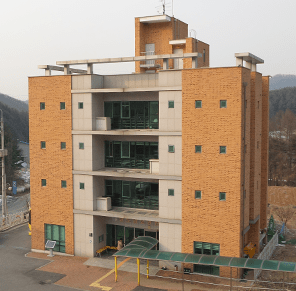
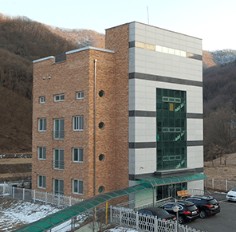

시설안내
시설현황
시설현황
| 운영법인 | 사회복지법인 대한예수교장로회 실로암시각장애인복지회 | 법인대표 | 김선태 |
|---|---|---|---|
| 기관구분 | 장애인거주시설(중증장애인거주시설) | 계원일 | 2010년 7월 19일 |
| 직원정원 | 29명 (현원 27명) | 장애인정원 | 30명 (현원 30명) |
| 주소 | (11424) 경기도 양주시 광적면 쇠장이길 656 | 대표자 | 박지훈 |
| 전화 | 031-876-2900 | 팩스 | 031-876-2990 |
| 관할구청 | 관악구청 | 연락처 | 02-879-6031 |
면적
| 본관 | 대지 : 998㎡ | 본관 | 연 면 적 : 824.75㎡ |
|---|---|---|---|
| 신관 | 대지 : 885㎡ | 신관 | 연 면 적 : 685.08㎡ |
| 본관전경 |  | 신관전경 |  |
시설현황
| 운영법인 | 사회복지법인 대한예수교장로회 실로암시각장애인복지회 |
|---|---|
| 기관구분 | 장애인거주시설(중증장애인거주시설) |
| 직원정원 | 29명 (현원 27명) |
| 주소 | (11424) 경기도 양주시 광적면 쇠장이길 656 |
| 전화 | 031-876-2900 |
| 관할구청 | 관악구청 |
| 법인대표 | 김선태 |
|---|---|
| 계원일 | 2010년 7월 19일 |
| 장애인정원 | 30명 (현원 30명) |
| 대표자 | 박지훈 |
| 팩스 | 031-876-2990 |
| 연락처 | 02-879-6031 |
면적
| 본관 | 대지 : 998㎡ |
|---|---|
| 신관 | 대지 : 885㎡ |
| 본관전경 |  |
| 본관 | 연 면 적 : 824.75㎡ |
|---|---|
| 신관 | 연 면 적 : 685.08㎡ |
| 신관전경 |  |
설립목적
시설보호가 필요한 중증시각장애인을 대상으로 사회심리지원사업, 의료지원사업, 교육지원사업, 거주지원사업 등 맞춤형 서비스 제공을 통해 중증시각장애인의 정서적, 심리적 안정을 도모하고 개인의 능력을 최대한 신장시켜 사회에 통합하게 함을 목적으로 한다.
사업의 효과
중증장애인에게 최상의 시설과 사업을 제공함으로써 안정된 생활을 영위하도록 하고 더불어 함께 사는 사회분위기를 조성할 수 있다.
맞춤형 프로그램 및 서비스 제공을 통해 타 기관에 선두적인 역할 모델을 제시할 수 있다.
이용자 현황
(단위 : 명)
| 구분 | 남 | 여 | 수급 | 비수급 |
|---|---|---|---|---|
| 인원 | 11 | 19 | 21 | 9 |
| 합계 | 30 | 30 | ||
장애유형 현황
(단위 : 명)
| 구분 | 시각장애 | 지적장애 | 중복장애 | 합계 |
|---|---|---|---|---|
| 인원 | 19 | 4 | 7 | 30 |
| 비율 | 63.3(%) | 13.3(%) | 23.4(%) | 100(%) |
본관 : (11424) 경기도 양주시 광적면 쇠장이길 656
| 구분 | 면적 | 용도 |
|---|---|---|
| 지하 1층 | 95.74㎡(29평) | 보일러실, 기계실, 세탁건조실, 창고 |
| 지상 1층 | 174.04㎡(53평) | 프로그램실, 의무실, 원장실, 사무실 |
| 지상 2층 | 184.99㎡(56평) | 거실, 탈의실, 목욕실, 생활실/화장실 5개 |
| 지상 3층 | 184.99㎡(56평) | 거실, 탈의실, 목욕실, 생활실/화장실 5개 |
| 지상 4층 | 184.99㎡(56평) | 식당/강당, 주방, 생활실/화장실 3개 |
| 총계 | 824.75㎡(250평) | 대지면적 : 998㎡(302평) 건물높이 : 15.2m |
신관 : (11424) 경기도 양주시 광적면 쇠장이길 654
| 구분 | 면적 | 용도 |
|---|---|---|
| 지상 1층 | 169.38㎡(51평) | 남자숙소, 물리치료실 |
| 지상 2층 | 169.38㎡(51평) | 여자숙소, 언어/작업치료실 |
| 지상 3층 | 169.38㎡(51평) | 관리자숙소 |
| 지상 4층 | 176.94㎡(54평) | 예배당/강당 |
| 총계 | 685.08㎡(207평)) | 대지면적 : 885㎡(268평) 건물높이 : 15.55m 건물면적 : 685.08㎡(207평) |